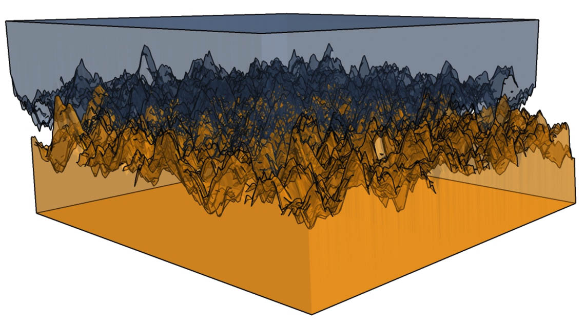

마찰력(friction)과 뉴턴의 운동 법칙
이제 마찰력이 정지해 있는 물체와 운동 중인 물체에 어떻게 상호작용하는지 살펴볼 차례입니다. 그 전에, 이 학습 활동에서 필요한 용어를 위해 노트를 준비하세요.
노트
어휘: 노트나 다른 방법을 사용하여 뉴턴의 운동 법칙 적용의 맥락에서 사용되는 다음 어휘를 기록하세요. 학습 활동을 완료하면서 어휘에 관한 정의와 핵심 용어를 채워 넣으세요.
- 운동 마찰력(kinetic friction)
- 정지 마찰력(static friction)
- 수직항력(normal force)
- 계수(coefficient)
마찰력: 좋은가 나쁜가?
사람이 눈 위에서 썰매를 타거나 공원의 미끄럼틀을 빠르게 내려올 수 있는 이유를 생각해 보세요. 마찰력이 매우 적으면 빠르게 미끄러지는 것이 쉽습니다. 양말을 신고 나무 바닥이나 타일 바닥을 미끄러지는 것은 가능하지만, 카펫 바닥에서도 미끄러질 수 있을까요? 일부 표면에서는 미끄러질 수 있지만, 마찰력 때문에 모든 표면에서 미끄러질 수 있는 것은 아닙니다.
생각해 보기
눈이나 얼음 위에서 수행하는 스포츠와 레크리에이션 활동을 생각해 보세요. 마찰력이 유리한 상황을 생각해 보세요. 마찰력이 불리한 상황을 생각해 보세요. 토론에서 그 상황들을 설명하고 급우들과 공유하세요.
이 학습 활동에서는 마찰력의 원인과 운동에 미치는 영향을 탐구합니다.

마찰력(frictional force)
마찰력, 즉 Ff는 모든 표면 사이에 존재하지만, 마찰력의 크기는 부분적으로 표면의 특성에 의해 결정됩니다. 얼음이나 타일과 같은 매끄러운 표면은 카펫이나 아스팔트와 같은 거친 질감의 표면보다 마찰력이 적습니다. 두 표면이 정지 상태에서 서로 접촉하고 있을 때, 표면의 원자들은 서로 끌어당기며 일시적인 결합을 형성합니다. 두 표면이 서로 밀리거나 당겨져 지나갈 때, 이 일시적인 결합은 다음 도표에서 보여주는 것처럼 붙었다 미끄러지는 과정에서 계속 끊어지고 다시 형성됩니다. 표면 사이의 접촉량과 표면 사이의 일시적인 결합의 강도가 마찰력, 즉 표면 사이의 "끈적임" 정도를 결정하는 데 도움을 줍니다.

마찰력은 미시적 수준에서 두 표면 사이의 상호작용에 의해 발생합니다.
마찰 계수(coefficient of friction)
서로 미끄러지는 두 표면 사이의 거칠기 정도를 운동 마찰 계수(coefficient of kinetic friction)라고 합니다. 정지 마찰 계수(coefficient of static friction)도 있습니다. 계수는 표면 쌍마다 다릅니다.
-
μk는 운동 마찰 계수의 기호입니다
-
μs는 정지 마찰 계수의 기호입니다
기호 μ는 그리스 문자 뮤(mu)입니다. 이것은 SI 접두사 "마이크로"와 같은 기호이며, 수식 편집기의 기호 삽입 메뉴에서 찾거나 단축키 "\mu"를 사용하여 입력할 수 있습니다.
예제
다음 표에서 윤활된 강철 대 강철과 건조한 강철 대 강철의 정지 마찰 계수를 비교해 보세요. 윤활제는 강철로 만들어진 기계 부품을 움직이는 데 유용합니다. 윤활된 강철 대 강철의 정지 마찰 계수 값이 더 낮다는 것은 마찰이 적다는 것을 나타냅니다. 이러한 부품들이 서로 더 쉽게 움직일 수 있고, 기계가 빨리 마모되지 않습니다.
| 표면 | 정지 마찰 계수 (μs) | 운동 마찰 계수 (μk) |
|---|---|---|
| 건조한 강철 대 강철 | 0.74 | 0.57 |
| 윤활된 강철 대 강철 | 0.15 | 0.06 |
| 강철 대 얼음 | 0.010 | 0.010 |
| 고무 대 마른 콘크리트 | 1.00 | 0.80 |
| 고무 대 젖은 콘크리트 | 0.70 | 0.50 |
| 고무 대 얼음 | 0.15 | 0.005 |
같은 표면에 대한 μk와 μs 값을 비교해 보세요. μk < μs임을 알 수 있을 것입니다.
이것은 주어진 물체가 주어진 표면과 상호작용할 때 운동 마찰력이 정지 마찰력보다 작다는 것을 의미합니다.
마른 콘크리트 위에서 상자를 미는 것을 생각해 보세요. 상자를 움직이기 시작할 때 처음에 더 많은 노력이 필요하고, 계속 움직이게 하는 것은 덜 힘듭니다.
직접 해보기!
각 질문에 제시된 선택지만 고려하여, 각 질문의 설명에 가장 적합한 재료를 선택하세요.
수직항력(normal force)
바닥을 가로질러 소파를 미는 것을 생각해 보세요. 친구 두 명이 소파에 앉아 있다면 차이가 있을까요? 두 친구가 소파에 앉아 있는 대신 밀어주면 소파를 움직이기가 더 쉬울 것입니다. 소파와 두 친구의 질량(mass)은 소파만의 질량보다 큽니다. 물체의 질량이 증가하면 물체에 작용하는 마찰력도 증가합니다.
소파에 작용하는 힘(force)은 무엇일까요? 소파는 중력(gravity)에 의한 아래 방향의 힘을 받습니다. 이 힘은 바닥을 아래로 누르지만, 소파가 바닥을 뚫고 떨어지지 않으므로 소파에 작용하는 알짜힘(net force, Fnet)이 0이 되도록 위쪽 방향의 힘이 있어야 합니다. 이 위쪽 방향의 힘을 수직항력이라고 합니다. 수직항력(FN)은 표면의 지지력입니다.
다음 이미지를 살펴보고 수직항력이 항상 물체를 지지하는 표면의 위쪽 방향 힘임을 확인하세요.
이 과목에서 살펴볼 상황에서 Fg는 FN과 같은 크기를 가지지만, 반대 방향으로 작용합니다.
물론, 공중에 있는 공이나 날고 있는 새처럼 물체에 지지력이 없는 경우도 많습니다.
마찰력 구하기
마찰력(Ff)은 마찰 계수 (μk)에 의해 수직항력(FN)과 관련됩니다. 서로 미끄러지는 두 물체에 대해 다음 방정식을 사용합니다:
마찰력
운동 마찰력의 방향은 항상 운동 방향의 반대입니다.
수직항력은 중력과 크기가 같고 방향이 반대이므로, 중력의 크기를 알면 수직항력의 크기도 알 수 있습니다. 질량이 증가하면 중력과 수직항력 모두 증가합니다.
μk 값을 구하려면 표에서 찾거나 주어진 값을 사용해야 합니다. 이 값은 서로 미끄러지는 두 표면에만 의존합니다. 질량을 변경해도 μk는 변하지 않습니다.
| 표면 | 정지 마찰 계수 (μs) | 운동 마찰 계수 (μk) |
|---|---|---|
| 건조한 강철 대 강철 | 0.74 | 0.57 |
| 윤활된 강철 대 강철 | 0.15 | 0.06 |
| 강철 대 얼음 | 0.01 | 0.010 |
| 고무 대 마른 콘크리트 | 1.00 | 0.80 |
| 고무 대 젖은 콘크리트 | 0.70 | 0.50 |
| 고무 대 얼음 | 0.15 | 0.005 |
예제: 운동 마찰력(kinetic friction)
얼음 위에서 450 g 고무 장화에 작용하는 운동 마찰력을 계산하세요.
주어진 값:
풀이:
을 구하려면, 이것이 와 크기가 같다는 것을 기억하세요.
노트
이제 노트에서 다음 운동 마찰력 문제를 직접 풀어보세요. 다 풀었으면 예시 답안과(새 창에서 열림) 비교하세요.
- 어린이가 질량 0.250 kg의 나무 블록을 왼쪽으로, 나무 바닥을 가로질러 밀고 있습니다. 어린이가 가하는 힘은 4.0 N입니다. 운동 마찰 계수는 0.20입니다.
- 블록의 자유 물체 도표(FBD)를 그리세요. 네 가지 힘이 작용해야 합니다.
- 나무 블록에 작용하는 알짜힘을 계산하세요.
- 나무 블록의 가속도를 구하세요.
- 질량 152 g의 고무 퍽이 젖은 아스팔트 위를 남쪽으로 미끄러지고 있습니다. 1.4 N의 마찰력에 의해 감속되고 있습니다. 운동 마찰 계수는 얼마입니까?
참고: 퍽이 자체적으로 미끄러지고 있으므로, 가한 힘(A)은 작용하지 않습니다.
읽기
운동학(kinematics)과 관련된 개념을 적용하는 기술(예: 스포츠에서 속력을 측정하는 장치, 로켓 가속기, 보안 시스템용 운동 감지 센서, 자동차 속도계)을 분석하고 직접 조사하세요. 관심 있는 질문을 만들고 그 질문에 답하세요.
예시 질문:
- 자율주행 자동차는 어떻게 작동합니까?
- 회전 교차로가 신호등보다 나을까요?
- 스마트 신호등 시스템은 사회에 어떤 이점을 줄까요?
- 대형 차량(픽업트럭과 SUV)을 금지해야 할까요?
- 재택 학습과 관련된 이점과 단점은 무엇입니까?
그 기술에 대해 발견한 내용, 기술 개발과 관련된 문제점, 그리고 성공적인 구현이 사회에 미치는 영향에 대해 짧은 단락을 작성하세요.

어떤 치료법을 선택하시겠습니까?
마찰력에 대해 더 배운 후, 마찰력이 최소한으로 필요한 상황이 많다는 것을 알아두는 것이 중요합니다.
윤활액(synovial fluid)은 인체 관절의 마찰을 최소화합니다. 이 마찰 감소가 어떻게 작용하는지, 그리고 너무 많은 마찰을 겪고 있는 닳은 관절에 어떤 일이 일어나는지 알아보기 위해 조사하세요.
다음으로, 아래 기사를 검토하고 필요하면 추가 조사를 하세요.
만약 골관절염이 있다면, 어떤 치료법을 선택하시겠습니까? 왜 그런가요? 그 치료법이 무릎의 마찰을 어떻게 줄여줄까요?
읽기
이 질환의 다양한 치료법에 대한 다음 기사 무릎 골관절염의 세 가지 치료법새 창에서 열림을 읽어보세요.
생각해 보기
노트에 어떤 치료법을 선택할 것인지와 그 이유에 대한 최종 결정을 기록하세요.
온타리오주에서 자동차 소유자에게 겨울 타이어를 의무화해야 할까요?
마찰력이 어떻게 유리할 수 있는지 배웠습니다. 높은 마찰 계수는 다양한 도로 조건에서 자동차가 멈추는 데 도움을 줄 수 있습니다. 이제 자동차 소유자에게 온타리오주에서 겨울 타이어를 의무화해야 하는지에 대한 의견을 형성하는 데 도움이 되는 포트폴리오 활동을 수행합니다.
노트
"겨울 타이어"를 조사하고 다양한 조건에서 마찰력이 왜 중요한지 설명하세요. 일부 주에서는 겨울철에 차량에 겨울 타이어를 장착하도록 요구합니다. 이러한 법률은 사회적, 경제적, 환경적 영향을 미칩니다.
조사를 완료하면서 다음 "여섯 모자" 활동을 수행하고 각 관점에서의 결론을 노트에 기록하세요. 이 활동에서는 여섯 가지 다른 관점(각기 다른 색의 모자에 대한 다른 관점)에서 문제를 고려합니다. 다양한 관점에서 문제를 이해하는 데 도움이 되도록 각 색상 아래에 메모를 작성하세요.
여섯 모자 관점
- 흰색 모자. 사실적 관점. 이 공간에 사실에 대한 요점 메모를 작성하세요. 사실만 적고, 의견은 적지 마세요.
- 노란색 모자. 긍정적 관점. 이 공간에 이 문제에 대한 긍정적(낙관적) 관점에서 메모를 작성하세요.
- 검은색 모자. 부정적 관점. 이 공간에 반대 입장을 취하거나 부정적 관점(반대)에서 메모를 작성하세요. 무엇이 잘못될 수 있을까요? 단점은 무엇일까요?
- 빨간색 모자. 감정적 관점. 이 공간에 자신의 감정, 직감, 아이디어에 대해 메모를 작성하세요.
- 초록색 모자. 창의적 관점. 이것은 창의적이 될 공간입니다. 다른 선택지가 있을까요? 창의적인 해결책은? 새로운 아이디어가 있을까요?
- 파란색 모자. 성찰적 관점. 이것은 과정을 모니터링하는 관점입니다. 다섯 가지 다른 관점을 고려했는지 최선을 다해 확인하세요. 위의 메모를 검토하세요. 여기에서 성찰하세요 - 모든 다른 관점에서 문제를 고려했나요? 과정을 개선할 수 있었나요?
노트
이제 이 단원의 모든 학습 활동을 완료했으므로, 다음 안내에 따라 독립적인 조사를 수행하세요. 조사 결과를 노트에 기록하세요.
- 이 단원에서 다룬 주제와 관련된 관심 있는 직업을 선택하세요. 이 직업을 추구하기 위해 필요한 교육과 훈련을 조사하세요.
- 이 단원의 내용과 관련된 물리학 분야의 유명한 캐나다 물리학자를 선택하세요. 물리학자의 이름, 물리학 지식에 기여한 시기, 기여한 내용, 그리고 사회에 어떤 도움이 되었는지를 포함하는 짧은 전기를 준비하세요.
복습
어휘: 어휘를 복습하고 이 학습 활동의 어휘와 관련된 정의와 단어를 사용한 단락을 추가하세요.
학습 활동 2.8 과제
준비가 되면, 다음 페이지로 이동하여 2.8 과제새 창에서 열림.에 대해 더 알아보세요.
전이 가능 기술 설문
단원을 완료한 후, 1.1에서 소개된 온타리오주의 전이 가능 기술에 대한 자신의 시연을 검토할 기회를 가지세요. 제2단원 전이 가능 기술 설문을 완료하여 자신의 평가와 그 평가에 대한 구체적인 증거를 공유하세요.
전이 가능 기술 설문 버튼을 눌러 접속하세요.
(새 창에서 열림)자기 점검 퀴즈
이해도를 확인하세요!
다음 자기 점검 퀴즈를 완료하여 학습 진행 상황과 집중해야 할 영역을 파악하세요.
이 퀴즈는 피드백 목적으로만 사용되며, 성적에 포함되지 않습니다. 이 퀴즈는 무제한으로 시도할 수 있습니다. 충분한 시간을 가지고, 최선을 다하며, 제공된 피드백을 되돌아보세요.
퀴즈를 눌러 이 도구에 접속하세요.